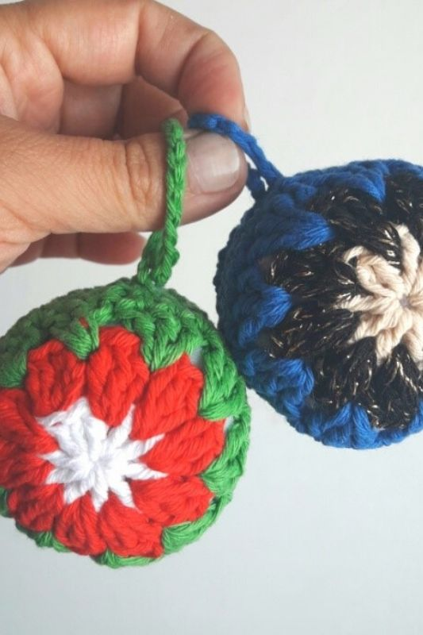

Materiales
Hilo de algodón color a eleccion
Aguja de Crochet N° 3
Aguja de coser Lana
Tijera
Vellon
Abreviaturas
c:cadena
p: punto
p.enano: punto deslizado o razo.
Pb: punto bajo.
Pm: punto medio.
V o pa: vareta.
Pdv: punto doble vareta.
Aum: Aumento (2puntos en el mismo punto de base)
Dism: Disminucion (tomar 2puntos y cerrarlos juntos)
Recomendaciones:
Animate a conbinar todos los colores!!
Podes ponerle una caja sonajero, ideal para los niños.
1° Vuelta: Anillo Mágico, 3cadenas (se toma como una vareta) y 9 varetas, cambiar el color cerrando la vuelta con punto enano,
2°V: Subir 2cadenas y tejer 2vareta entre 2 varetas de la hilera anterior, luego tejer 3 varetas entre las 2 siguientes varetas de la vuelta anterior, esto quiere decir que al cerrar esta vuelta tendremos 10 grupos de 3vararetas. Cambiar el color cerrando la vuelta con punto enano o raso.
3°V: Subir 2cadenas y tejer 2vareta entre 2 grupos de la vuelta anterior, luego tejer 3 varetas entre las 2 grupos siguientes de la vuelta anterior, esto quiere decir que al cerrar esta vuelta tendremos 10 grupos de 3vararetas. Cerrar la vuelta con punto enano o raso.
4°V: tejer 30 puntos bajos, cerrar con punto enano o raso, dejar 50cm de hilo para coser.
Tejer otra vez esta última secuencia, al cerrar la vuelta 4 cortar el hilo con 1cm (luego se esconde)
Armado
Coser las 2 semiesferas, rellenan con vellón.
Al cerrar hacer un nudo para asegurar la costura, con el hilo que queda arrancar cadenitas, cerrar, anudar y esconder hilo.
.